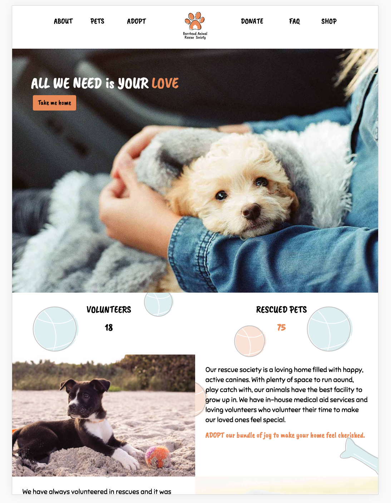

Website Design - Animal Rescue
Website re-design for an animal rescue/adoption site. The website aims to make adoption a fun & inviting. With easy and responsive navigation, playful colours and typography, the website makes it a fun environment for adopters/donaters. The website was designed and coded from scratch, making it accessibility friendly.
website design


Link to the website